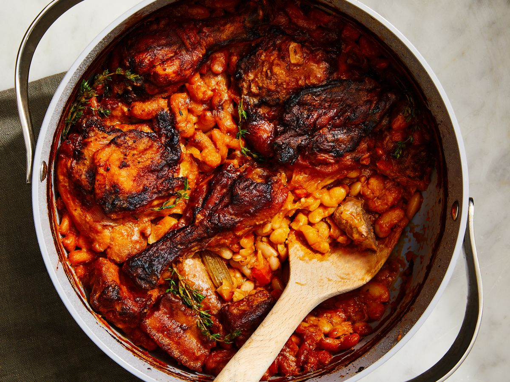

<!DOCTYPE html>
<html lang="eng">
    <head>
        <meta charset="utf-8">
        <title>Cassoulet</title>
    </head>
</html>

<body>
    <h1>Cassoulet</h1>
     
    <h2>Description</h2>
    <p>
        Cassoulet is a simple farmer's "slop" from france. It's very simple to make and very delicious. 
        All you need is a nice ovensafe pot, white beans, and any leftover meat. 
        This recipe will follow the traditional recipe of using sausage of duck, but the spirit of the recipe is any cheap meat you have.
    </p>

    <h2>Ingredients</h2>
    <ul>
        <li>1 pound (454g) dried cannellini beans</li>
        <li>3 tablespoons (27g) Diamond Crystal kosher salt; for table salt, use half as much by volume or the same weight</li>
        <li>5 cups (1.2L) homemade or store-bought unsalted chicken stock, divided (see notes)</li>
        <li>3 packets unflavored gelatin (3/4 ounce; 21g), such as Knox (optional, see notes)</li>
        <li>2 tablespoons (30ml) duck fat (optional)</li>
        <li>8 ounces (227g) salt pork, cut into 3/4-inch cubes (about 1 1/4 cups)</li>
        <li>8 ounces (227g) boneless pork shoulder, cut into 1-inch cubes</li>
        <li>4 skin-on, bone-in chicken thighs, 4 fresh duck legs, or 4 prepared duck confit legs</li>
        <li>Freshly ground black pepper</li>
        <li>1 pound (454g) garlic sausage (divided into 2-4 segments, if sausage is large)</li>
        <li>1 large onion (12 ounces; 340g), finely diced (about 1 1/2 cups)</li>
        <li>1 carrot (4 ounces;113g), unpeeled and cut into 3-inch sections</li>
        <li>2 ribs celery (6 1/2 ounces; 188g), cut into 3-inch sections</li>
        <li>1 whole head garlic (2 3/4 ounces; 80g)</li>
        <li>4 sprigs flat-leaf parsley</li>
        <li>2 bay leaves</li>
        <li>6 cloves</li>
    </ul>

    <h2>Steps</h2>
    <ol>
        <li>In a large bowl, cover beans with 3 quarts (2.8L) water and add salt. Stir to combine, then let stand at room temperature overnight. Drain and rinse beans; set aside.</li>
        <li>Adjust oven rack to lower-middle position and preheat oven to 325°F (160°C). Place 4 cups (946ml) stock in a large liquid measuring cup and sprinkle gelatin, if using, over top. Set aside. In a large Dutch oven, heat duck fat (if using), salt pork, and pork shoulder and cook over high heat, stirring occasionally, until browned all over, about 9 minutes (if not using duck fat, cook pork with no additional fat). Using a slotted spoon, transfer to a large bowl, leaving rendered fat in Dutch oven, and set aside.</li>
        <li>Season chicken thighs or duck confit with pepper (do not add salt) and place skin side down in Dutch oven. Cook without moving until well-browned, 6 to 8 minutes. Transfer to a plate and let cool to room temperature.</li>
        <li>Add sausages to Dutch oven and cook, turning occasionally, until well-browned, about 2 minutes per side. Transfer to bowl with salt pork. Drain all but 2 tablespoons fat from pot.</li>
        <li>Add onions to Dutch oven and cook, stirring and scraping up browned bits from bottom of pot, until onions are translucent but not browned, about 4 minutes. Add drained beans, carrot, celery, garlic, parsley, bay leaves, cloves, and stock/gelatin mixture. Bring to a simmer over high heat. Reduce to low, cover Dutch oven, and cook until beans are slightly softened but retain a bite, about 20 minutes.</li>
        <li>Cover cooled chicken or duck and transfer to refrigerator. Using tongs, remove carrots, celery, parsley, bay leaves, and cloves from pot and discard. Add pork and sausages to pot and stir to incorporate. Beans should be almost completely submerged. Transfer to oven and cook, uncovered, adding remaining 1 cup (237ml) stock halfway through by pouring it carefully down side of pot as necessary to keep beans mostly covered, until a thin crust forms on top, about 1 hour 30 minutes.</li>
        <li>Break crust with a spoon and shake pot gently to redistribute. Nestle chicken or duck into the Dutch oven, skin side up. Return to oven and continue cooking, stopping to break and shake crust every 30 minutes, until crust is deep brown and thick, an additional 1 hour 30 minutes. Serve immediately.</li>
    </ol>
</body>